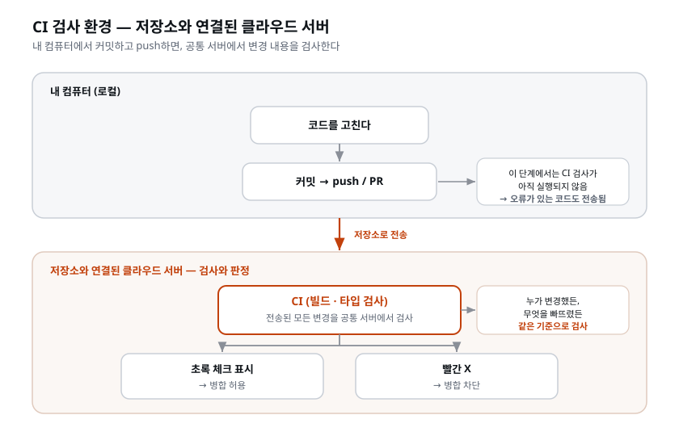

이 장이 끝나면: 온티켓 저장소의 main에 push할 때마다 클라우드가 자동으로 빌드와 타입 검사를 돌리는 CI 파이프라인이 갖춰져 있다. 내 컴퓨터가 아니라 클라우드에서 검사가 도는 것을 눈으로 확인하고, 워크플로 파일(YAML)을 읽을 줄 알게 된다.
지금 온티켓은 오대표 혼자 보던 코드에서 사람이 늘어나는 서비스로 커 가는 중이다. 이 상황에서 "올리기 전에 각자 빌드 한번 돌려 보자"는 약속만으로 버틸 수 있을까. 각자 자기 노트북에서 성실하게 확인하는 방식에는 최소 네 개의 구멍이 있다.
즉 개인의 확인은 "모두가 성실하게, 같은 기준으로, 매번 한다" 는 전제 위에서만 완전하다. 그 전제는 사람이 하나 늘 때마다 약해진다. 검증을 개인의 습관에 맡겨 두는 한 언젠가는 새는 날이 온다. 온티켓처럼 결제와 좌석이 걸린 서비스에서 그 하루가 하필 초과 판매 사고 (골목 라이브의 그날처럼)로 이어지면 곤란하다.
그래서 필요한 것은 반대 방향이다. 저장소에 올라온 모든 변경을, 누가 올렸든, 기계가 같은 기준으로 검사하는 것. 검사가 일어나는 자리를 개인의 노트북에서 저장소 쪽으로 옮겨야 한다.
그 자리를 옮기는 것이 CI(Continuous Integration, 지속적 통합) 다. CI는 코드가 저장소(GitHub)에 올라오는 순간, 내 컴퓨터가 아니라 중립적인 클라우드 서버가 검사를 돌리는 체계다. 누구의 컴퓨터에 무엇이 깔렸든 상관없다 — 누가 올린 코드든 같은 서버에서 같은 검사를 받는다.
핵심 단어는 '중립' 이다. 개인이 직접 확인할 때는 사람마다 설정이 다른 자기 컴퓨터에서 검사한다. CI가 도는 서버는 모두가 함께 쓰는 공용 공간이다. 오대표의 맥북에서도, 새로 합류한 사람의 윈도우 노트북에서도, 코드는 결국 같은 클라우드 머신에서 똑같은 방식으로 검사받는다. "내 컴퓨터에선 됐는데요"라는 말이 통하지 않는 이유가 여기 있다 — 판정 장소가 개인의 컴퓨터가 아니라 모두에게 동일한 제3의 장소이기 때문이다.
'지속적 통합(Continuous Integration)'이라는 이름도 풀어 보면 개념이 또렷해진다. 여기서 통합(integration) 은 여러 사람이 따로 작업한 코드를 하나로 합치는 일을 말한다. 옛날에는 각자 몇 주씩 따로 개발하다가 마지막에 한꺼번에 합쳤는데, 그러면 충돌과 버그가 산더미처럼 터졌다(이른바 '통합 지옥'). 그래서 나온 발상이 "작게, 자주, 계속 합치자" 였다. 합칠 때마다 바로 검사해서 깨진 곳을 즉시 잡으면, 문제가 쌓이기 전에 발견된다. 지속적(continuous) 은 바로 이 '합칠 때마다 매번, 자동으로'를 가리킨다. CI란 결국 "코드가 합쳐지는 순간마다 자동으로 검사가 돈다" 는 약속이다.
검사가 일어나는 자리를 시간 축으로 그리면 이렇다.

지금까지 우리는 검증을 만들었다 — 코드리뷰어, QA, 보안 엔지니어. CI의 역할은 그 검증들을 사람이 기억하지 않아도 매번 돌게 만드는 것이다. 좋은 자동화의 기준은 하나다: "안 하면 어떻게 되지?"의 답이 '자동으로 막힌다'인가. 잊을 수 있는 규칙은 규칙이 아니라 권고다.
이 기준을 실제 업무에 적용해 보자. 팀에서 "앞으로 올리기 전엔 꼭 빌드 한번 돌려 봅시다" 같은 다짐을 회의에서 정하는 경우가 많은데, 이런 다짐의 운명을 가르는 질문은 딱 하나다.
"그걸 깜빡한 사람에게 무슨 일이 일어나는가?"
이 잣대로 흔한 방식들을 갈라 보면 판단이 쉬워진다.
| 흔한 방식 | "안 하면?"의 답 | 판정 |
|---|---|---|
| "올리기 전에 빌드 돌려 보자"고 회의에서 약속 | 깜빡해도 아무 일 없음 | 권고 (샌다) |
| README에 "배포 전 체크리스트" 적어 둠 | 안 읽어도 그만 | 권고 (샌다) |
| 이 장에서 세우는 CI | 깜빡해도 기계가 대신 검사하고 결과를 남김 | 경고등 (샌 것을 즉시 알려 준다) |
| CI + 브랜치 보호(팀) | 빨간 X면 병합 버튼이 잠김 | 규칙 (못 샌다) |
이 장의 자리를 미리 정직하게 밝혀 둔다. 혼자 만드는 지금 세우는 것은 넷째 줄이 아니라 셋째 줄, 경고등이다. 사람이 여럿이 되면 그 경고등에 잠금 장치를 물린다. 어느 쪽이든 핵심은 같다 — 자동화의 가치는 '편해지는가'가 아니라 '사람의 기억에 기대지 않는가'로 잰다. 알림을 띄우는 자동화, 리포트를 이메일로 보내는 자동화가 흐지부지되는 이유는, 그것이 사람이 챙겨야 비로소 일하기 때문이다.
[짚고 가기] 이 "안 하면 자동으로 막히는가" 잣대는 실무에서 두고두고 쓰는 사고 도구다. 내가 속한 회사·학교의 규칙 중 사실은 권고인 것을 하나씩 떠올려 보면 개념이 확 붙는다(예: "커밋 메시지 꼭 잘 쓰기" 같은 것 대부분은 권고다). 그 권고를 어떻게 규칙으로 바꿀지 상상해 보면, CI/자동화의 본질이 손에 잡힌다.
CI에 아무거나 올릴 수는 없다. 판정이 애매한 검사를 올리면 멀쩡한 변경에도 빨간 X가 뜨고, 그러다 보면 사람이 결과를 안 믿게 되고 결국 검사를 꺼 버린다. 그래서 고르는 기준은 둘이다 — 기계가 명확히 판정할 수 있는가, 그리고 사람이 깜빡했을 때 기계가 대신 봐 줬으면 하는가.
온티켓에서 그 답이 가장 분명한 것이 빌드와 타입 검사 둘이다(각각 무엇을 보는 검사인지는 바로 다음 용어 정리에서 짚는다). 둘 중 하나라도 깨진 코드가 main에 들어가면 그 순간부터 아무도 배포하지 못한다. 되돌리려면 사람이 원인을 찾아 고치고 다시 올리는 왕복을 해야 하니, "올리자마자 알려 줌"의 가치가 가장 크다.
| CI에 세울 검사 | CI에서 하는 일 | 온티켓에서 막는 사고 |
|---|---|---|
| 타입 검사 | 값의 종류가 어긋난 곳이 없는지 대조 | API 응답 구조이 바뀐 걸 모르고 쓰던 화면이 깨진 채 main에 들어감 |
| 빌드 | 내보낼 수 있는 형태로 실제로 만들어지는지 확인 | "내 PC에선 됐는데" 빌드가 서버에서 깨져 배포가 막힘 |
| 린트(이후) | 코드 스타일·명백한 실수 자동 점검 | 자잘한 오류가 리뷰 시간을 잡아먹음 |
처음부터 다 넣지 않는다. 빌드와 타입 검사 둘로 시작해 초록/빨강이 도는 것을 확인하고, 검사가 작동하면 하나씩 추가한다. 처음부터 검사를 다 욱여넣으면 무언가 실패했을 때 어느 스텝이 왜 실패했는지 가려내기가 어렵다. 게다가 CI를 처음 세울 땐 워크플로 파일 자체의 사소한 문제(도구 버전, 설치 순서 등)로 실패하기 쉬운데, 스텝이 몇 개 안 되면 원인이 뻔히 보인다. 도는 검사를 먼저 확실히 세운 뒤 스텝을 한 개씩 추가하며 매번 "여전히 잘 도는가"를 확인하는 것이 결국 가장 빠르다. 안 도는 거대한 파이프라인보다, 도는 작은 검사가 낫다.
이 장에서 처음 만나는 용어들이다. 앞의 개념을 실제로 세우려면 이 단어들이 눈에 익어야 한다. 완벽히 외울 필요는 없다 — 워크플로 파일(YAML)을 읽을 때 "아, 이게 그거구나" 하고 알아보는 정도면 충분하다. 어차피 작성은 AI가 하고, 우리는 읽고 판단한다.
CI가 "합쳐도 안전한가"를 묻는다면, CD는 "안전하니 내보내자"를 실행한다. 이 장에서는 CI — 검사를 세우는 데 집중한다.
두 글자를 조금 더 풀어 두자. CI는 항상 Continuous Integration(지속적 통합) 이다. 그런데 CD는 두 가지 뜻이 섞여 쓰인다 — Continuous Delivery(지속적 전달)와 Continuous Deployment(지속적 배포)다. 둘의 차이는 "마지막에 사람이 버튼을 누르느냐"다.
| 약자 | 풀네임 | 무엇을 | 사람 개입 |
|---|---|---|---|
| CI | Continuous Integration | 합칠 때마다 자동 검사 | 검사 통과/실패를 사람이 확인 |
| CD | Continuous Delivery(전달) | 배포 직전까지 자동 준비 | 배포 버튼은 사람이 누름 |
| CD | Continuous Deployment(배포) | 검사 통과하면 배포까지 자동 | 사람 개입 없음 |
이 장에서 세우는 건 그중 CI 하나다. "검사가 자동으로 돈다"까지만 온티켓에 붙인다. "통과한 코드를 실제 서버로 내보낸다"는 그다음 이야기이고, 배포 자체를 다룰 때 이어 붙인다. 지금 이 순서가 중요하다 — 검사도 못 믿는 코드를 자동으로 배포하는 것만큼 위험한 게 없다. 그래서 CI(믿을 수 있는 검사)를 먼저 세우고, CD(자동 배포)는 그다음에 붙인다.
이 장의 CI가 돌릴 검사 둘을 먼저 정의하고 간다. 이름은 몇 번 스쳐 갔지만 제대로 짚은 적은 없는 단어들이다.
빌드(build) 는 사람이 쓴 소스 코드를 실제로 내보낼 수 있는 형태로 만들어 내는 작업이다.
개발하는 동안 pnpm dev로 띄워 보던 것은 '지금 고치는 중인 나'를 위한 임시 실행이라, 고친
파일만 후다닥 갈아 끼우고 넘어간다. 빌드는 다르다 — 프로젝트 전체를 처음부터 훑어서, 흩어진
파일을 묶고, 용량을 줄이고, 브라우저와 서버가 그대로 실행할 수 있는 결과물을 만든다.
여기서 핵심은 하나다. 빌드는 실패할 수 있다. 없는 파일을 가져다 쓰거나, 괄호가 안 닫혔거나, 어딘가 이름이 틀렸으면 빌드가 도중에 멈추고 오류를 출력한다. 뒤집어 말하면, 빌드가 성공했다는 것은 "적어도 내보낼 수는 있는 상태" 라는 보증이다. 빌드가 깨진 코드가 main에 들어가면 그 순간부터 아무도 배포할 수 없게 되므로, 이건 올리는 즉시 알아야 하는 종류의 사고다.
타입 검사(type check) 는 조금 설명이 필요하다. 프로그램이 다루는 값에는 종류가 있다 —
1200은 숫자, "골목 라이브"는 글자, 주문 한 건은 여러 값이 묶인 덩어리. 이 종류를 흔히
타입(type) 이라 부른다. 온티켓의 web/과 api/도 이 종류를 코드에 적어 두는 언어로
만들어져 있다 — 자바스크립트에 타입 표기를 얹은 TypeScript(타입스크립트) 다(뼈대를 세울 때
고른 Next.js와 Hono의 기본값이 그렇다). "이 자리에는 숫자가 온다", "이 값에는 email이라는
항목이 있다"를 코드에 적어 두는 언어다.
적어 두면 무엇이 좋은가. 돌려 보기 전에 기계가 대조해 준다. 숫자가 와야 할 자리에 글자를 넘겼거나, 없는 항목을 꺼내 쓰거나, 변수 이름을 한 글자 틀리게 썼으면 — 실행하지 않고도 "여기 어긋났다"를 짚어 낸다. 이 대조 작업이 타입 검사다.
왜 하필 이 둘을 CI에 세우는가. 이유가 셋이다.
한계도 같이 알아 두자. 이 둘은 "돌아가긴 한다"까지만 보증한다. 결제 금액이 1원 틀린 것, 좌석 수를 잘못 센 것은 빌드도 타입 검사도 잡지 못한다 — 문법적으로는 멀쩡한 코드이기 때문이다. 그건 코드리뷰어와 QA가 보는 영역이다. CI에는 기계가 확실히 판정할 수 있는 것만 올린다. 애매한 검사를 올리면 멀쩡한 변경에 빨간 X가 떠서, 결국 사람이 검사를 꺼 버린다.
온티켓에서 이 둘은 대개 pnpm build와 tsc --noEmit 같은 명령으로 돈다. 다만 정확한 명령은
프로젝트 설정에 따라 다르므로 외울 필요가 없다 — 뒤의 프롬프트에서 "프로젝트 구조를 먼저
확인해서 맞추고"라고 말해, AI가 실제 설정을 읽고 채우게 한다.
GitHub이 제공하는 CI/CD 도구. 저장소에 워크플로 파일을 넣어 두면, 지정한 사건(push 등)이 일어날 때 GitHub이 클라우드에서 그 작업을 실행해 준다. 별도 서버 계약이 필요 없고, 공개 저장소나 소규모 사용은 무료 사용량 안에서 돈다 — 우리 온티켓에 충분하다.
이름을 그대로 읽으면 'GitHub의 행동들'이다. 저장소에서 어떤 사건이 일어났을 때 GitHub이 대신 취해 주는 일련의 행동을 묶어 놓은 것이다. 왜 이게 편한지 대안과 비교하면 분명해진다.
요금 감각도 잡아 두자. GitHub Actions는 '검사에 쓴 컴퓨터 시간(분)'으로 과금하는데, 공개(public) 저장소는 이 시간이 완전 무료이고, 비공개(private) 저장소도 매달 일정 무료 사용량(개인 계정 기준 월 2,000분 수준)이 주어진다. 온티켓 CI 한 번은 대개 1~3분 남짓이라, 하루에 수십 번을 돌려도 소규모 프로젝트는 무료 범위를 넘기기 어렵다. "돈이 새는 것 아니냐"는 걱정은 이 단계에선 접어 두어도 된다.
[짚고 가기] "GitHub Actions 말고 다른 CI도 있나?" 물론 있다. CircleCI, GitLab CI, Jenkins 등 대안이 있지만, 온티켓 코드가 이미 GitHub에 있으니 같은 곳에서 검사까지 되는 GitHub Actions가 가장 마찰이 적다. "코드가 사는 집에 검사 설비가 붙어 있는 격"이라고 정리하면 왜 이걸 고르는지 납득된다.
GitHub Actions의 구조는 3층이다.
| 층 | 뜻 | 온티켓 예 |
|---|---|---|
| 워크플로(workflow) | 하나의 자동화 전체. YAML 파일 하나 | "main에 push되면 빌드와 타입 검사를 한다" |
| 잡(job) | 워크플로 안의 독립된 작업 단위 | "검사(check)" 잡 |
| 스텝(step) | 잡 안의 개별 명령 | 코드 받기 → 의존성 설치 → 타입 검사 → 빌드 |
이 3층을 회사 업무에 빗대면 한 번에 들어온다.
용어 하나 더 — 스텝에는 두 종류의 실행 방식이 있다. YAML에서 run:으로 시작하면 직접
명령을 치는 스텝이고(예: pnpm build), uses:로 시작하면 남이 미리 만들어 둔 행동 묶음을
가져다 쓰는 스텝이다(예: actions/checkout — "코드 받아오기"라는 흔한 작업을 누군가
포장해 둔 것). uses:는 "이 작업은 바퀴를 새로 발명하지 말고 만들어진 걸 쓰자"는 뜻으로
읽으면 된다.
YAML은 설정을 사람이 읽기 쉽게 적는 형식이다. 워크플로 파일이 이 형식으로 쓰인다. 작성은 AI가 하고 우리는 읽는다. 읽는 데 필요한 규칙은 셋뿐이다.
이름: 값 — 콜론 왼쪽은 항목 이름, 오른쪽은 값이다. name: CI는 "name이라는
항목의 값은 CI다"로 읽는다.jobs: 아래에 한 단 들여 쓴 check:는 "jobs 안에 check라는 잡이 있다"로
읽는다. 들여쓰기 한 항목이 문법이라 공백이 어긋나면 동작하지 않는다.-(붙임표+공백)는 목록의 한 항목 — 줄 맨 앞의 -는 "여기부터 목록의 한 개"라는
표시다. steps: 아래 -가 다섯 개면 순서대로 실행되는 스텝이 다섯 개다.곁들여, #으로 시작하는 줄은 주석(사람 메모, 실행에 영향 없음)이다.
이 셋으로 실제 워크플로를 읽어 보자.
# .github/workflows/ci.yml — 읽기용 예시
name: CI
on: # 언제 도나
push:
branches: [main] # - main에 push될 때
jobs:
check: # check 라는 잡
runs-on: ubuntu-latest # 클라우드의 리눅스 머신에서
steps:
- uses: actions/checkout@v4 # 1) 코드를 받아온다
- uses: pnpm/action-setup@v4 # 2) pnpm 준비
- run: pnpm install # 3) 의존성 설치
- run: pnpm typecheck # 4) 타입 검사 ← 어긋나면 잡 실패
- run: pnpm build # 5) 빌드 ← 깨지면 잡 실패
소리 내어 읽으면 이렇다 — "main에 push가 있으면, 리눅스에서, 코드 받고, pnpm 깔고,
타입을 대조하고, 빌드해 본다." 그게 전부다. 워크플로 파일은 on(언제) 과
jobs(무엇을) 두 덩어리로 나뉘니, 이 두 단어만 눈으로 찾으면 나머지는 딸림 정보다.
@v4 같은 꼬리표는 "그 도구의 4번째 버전을 쓴다"는 버전 고정 표시이고,
ubuntu-latest는 클라우드의 최신 우분투(리눅스) 머신을 빌려 쓴다는 뜻이다. 내 노트북이
윈도우든 맥이든 검사는 이 중립 리눅스 머신에서 돈다 — 앞서 말한 '중립'이 이 한 줄로 실현된다.
들여쓰기가 틀려 워크플로가 안 돌면, AI에게 "이 YAML 문법 검사해서 고쳐줘"라고 시키면 된다.
CI가 돌고 나면 그 실행에 초록 체크(통과) 또는 빨간 X(실패) 가 남는다. 이 판정을 상태 체크(status check) 라고 부른다. push한 커밋 옆에도, Actions 탭의 실행 목록에도 같은 도장이 찍힌다.
여기서 정직하게 짚을 것이 하나 있다. 상태 체크는 표시일 뿐이다. 빨간 X가 떠도 코드는 이미 main에 들어가 있다. 혼자 만드는 지금 CI는 잠금 장치가 아니라 경고등이다. 그래도 값이 있다 — 내가 못 본 것을, 내 컴퓨터에 무엇이 깔렸든 상관없이, 기계가 즉시 알려 준다. 알려 주지 않으면 고칠 수도 없다.
사람이 여럿이 되면 여기에 브랜치 보호 규칙(branch protection rule) 을 건다. "이 상태 체크가 초록이 아니면 main에 못 합친다"를 GitHub이 강제하게 만드는 설정이다. 그때 경고등은 잠금 장치가 되고, 이 장 첫머리의 "권고를 규칙으로"가 완성된다. 지금은 경고등까지다.
CI 작업의 프롬프트도 지금까지와 원칙이 같다 — 사람만 아는 결정(언제 돌릴지, 어디까지 할지)만 말하고, 나머지는 AI가 채운 뒤 사람이 읽어 확인한다.
main에 push하면 빌드와 타입 검사가 자동으로 돌도록 GitHub Actions를 만들어줘.다 만들면 한 줄씩, 무슨 뜻인지 설명해줘.이 지시가 두 줄로 충분한 이유를 보자. 첫 줄에서 사람이 정한 것은 두 가지뿐이다 — 언제 도는지 (main에 push할 때)와 무엇을 검사하는지(빌드와 타입 검사). 이 둘은 AI가 코드를 읽어서는 알 수 없는, 사람만 내릴 수 있는 결정이다. 그 밖의 것은 적지 않았다.
| 프롬프트에 적지 않은 것 | 왜 안 적어도 되는가 | 사람은 어디서 확인하나 |
|---|---|---|
파일 위치(.github/workflows/ci.yml) |
GitHub이 정한 규칙이라 AI가 안다 | 실습에서 파일을 열 때 경로를 눈으로 확인한다 |
검사를 돌리는 정확한 명령(pnpm build인지 pnpm --filter web build인지) |
프로젝트 설정 파일에 적혀 있다. AI가 읽고 맞춘다 | 만들어진 파일에서 명령 줄을 눈으로 확인한다 |
| 스텝 순서(우분투 → 코드 체크아웃 → pnpm 설치 → 의존성 설치 → 검사) | AI가 프로젝트를 읽고 채운다 | 만들어진 파일을 읽는다 |
| 검사가 실패하면 잡이 실패한다 | CI의 기본 동작이다 | Actions 탭의 초록/빨강 판정으로 드러난다 |
스텝 순서를 외워서 불러 줄 수 있는 사람은 YAML을 써 본 사람뿐이다. 우리는 YAML을 쓰지 않고 읽는 사람이다. 그래서 스텝은 AI가 채우고, 사람은 읽어서 확인한다. 둘째 줄 "다 만들면 한 줄씩, 무슨 뜻인지 설명해줘"가 그 읽기를 돕는다. AI가 만든 파일을 풀이와 함께 받아야, 처음 보는 YAML도 사람이 읽고 확인할 수 있다.
| 약한 지시 | 강한 지시 | 무엇을 바꿨나 |
|---|---|---|
| CI 좀 만들어줘 | main에 push하면 빌드와 타입 검사가 자동으로 돌도록 GitHub Actions를 만들어줘 | '언제'를 구체적 사건(main으로의 push)으로, '검사'를 무엇을 보는 검사인지로. 둘 다 사람의 결정이다. 스텝은 적지 않았다 |
| YAML 만들어줘 | …다 만들면 한 줄씩, 무슨 뜻인지 설명해줘 | 결과물뿐 아니라 '내가 읽을 수 있게'까지 요구 — 확인은 사람의 몫이므로 |
"main에 push하면"은 파일에 push: branches: [main]으로 적힌다. 이 과정에서는 브랜치를 나누지
않고 main 하나로 가므로, 검사가 붙어야 할 사건도 main으로의 push 하나다. 팀이 되어 브랜치와 PR을
쓰기 시작하면 여기에 pull_request를 더해 "합치기 전에도 검사"를 붙인다. 검사를 빌드와 타입 검사
둘로 정한 것도 결정이다 — 린트나 시크릿 스캔은 CI가 초록으로 도는 걸 확인한 뒤에 추가한다.
이 실습의 목표는 온티켓 저장소에 "main에 push하면 자동으로 빌드와 타입 검사가 도는" CI를 세우는 것이다. 프롬프트는 하나다. 대신 만들어진 파일을 읽고, 클라우드에서 검사가 도는 것을 눈으로 확인하는 데 시간을 쓴다. 준비물도 하나 — 온티켓 코드가 GitHub 저장소에 올라와 있어야 한다(push된 상태).
① 워크플로를 만든다.
main에 push하면 빌드와 타입 검사가 자동으로 돌도록 GitHub Actions를 만들어줘.다 만들면 한 줄씩, 무슨 뜻인지 설명해줘.위 프롬프트를 그대로 복사해 입력하면 된다. 다른 내용으로 바꿔서 해 보고 싶다면 자유롭게 바꿔도 좋다.
② 만들어진 파일을 읽는다.
먼저 파일이 놓이는 위치를 짚자. 워크플로 파일은 반드시 저장소의
.github/workflows/ 폴더 안에 있어야 GitHub이 인식한다. 폴더 이름이 점(.)으로 시작하는
'숨김 폴더'라 파일 탐색기에선 안 보일 수 있는데, VS Code 탐색기에는 정상적으로 나타난다.
경로가 정확한지 — .github/workflows/ci.yml — 를 먼저 확인한다.
그다음 한 줄씩 읽는다. 앞의 용어 정리에서 읽어 본 예시와 비교하며 "무슨 사건에 무슨
스텝"인지 짚는다. on은 어디 있고 무슨 사건이 적혔는지, jobs 아래 잡
이름은 무엇인지, steps의 -가 몇 개이고 마지막 두 개가 타입 검사와 빌드인지. 명령이
예시와 글자까지 같을 필요는 없다 — 프로젝트 설정에 따라 pnpm build일 수도,
pnpm --filter web build일 수도 있다. 중요한 것은 그 줄이 무엇을 하는 줄인지 내가 말할 수
있는가다. 모르겠으면 AI에게 "이 줄이 무슨 명령인지 설명해줘"라고 물으면 된다.
"내가 이 파일을 읽고 설명할 수 있는가" 가 이 따라하기의 진짜 완료 조건이다.
③ 커밋하고, 내보낼 때 푸시를 시킨다.
방금 만든 워크플로 커밋해줘.푸시해줘."푸시해줘" 한마디가 이 따라하기의 분기점이다. 워크플로는 main에 들어간 뒤부터 저장소의 사건을 지켜보기 시작하므로, 이 push가 워크플로를 저장소에 올리는 동시에 그 워크플로의 첫 실행을 띄운다.
push했으면 GitHub 저장소의 Actions 탭을 연다. 방금 push로 워크플로가 실행되는 것이 보인다 — 클릭하면 스텝이 하나씩 진행되는 로그가 뜬다. 내 컴퓨터가 아닌 클라우드에서 우리 검사가 도는 장면이다. 초록 체크로 끝나는지 확인한다.
이 장면을 학생이 직접 눈으로 보는 것이 이 장 첫머리의 '중립 클라우드' 개념을 체감하는 순간이다.
내 노트북에서는 아무 명령도 치지 않았는데, GitHub의 어떤 리눅스 머신이 우리 코드를 받아
의존성을 설치하고 타입을 대조하고 빌드까지 대신 돌리고 있다. 로그를 펼치면 스텝별로 초록 체크가 하나씩
켜지는 것이 보이는데, 이게 바로 YAML의 - 목록이 위에서 아래로 실행되는 모습이다.
파일에서 읽은 순서와 화면에서 도는 순서가 같다는 것을 확인시키면 개념이 딱 맞물린다.
[짚고 가기] 첫 실행이 빨간 X로 끝나는 경우가 꽤 있다 — 대개 코드 버그가 아니라 워크플로 설정 문제다(pnpm 버전, lock 파일 유무, 빌드 스크립트 이름 등). 당황하지 말고 로그의 빨간 스텝을 펼쳐 마지막 에러 몇 줄을 복사해서 AI에게 "이 CI 로그를 보고 워크플로를 고쳐줘"라고 주면 된다. 이 과정 자체가 좋은 경험이다 — "CI가 실패를 어떻게 알려 주는지, 그리고 그 로그로 어떻게 고치는지"를 직접 겪고 나면, 검사가 실제로 일하고 있다는 것을 알게 된다. (고친 다음에도 커밋하고 "푸시해줘"라고 시킨다. 그 push가 다음 실행을 띄운다.)
.github/workflows/ci.yml 이 있고, 각 스텝의 뜻을 설명할 수 있다앞의 두 줄은 각각 이 장의 핵심과 맞물린다. 첫째 줄은 YAML 읽기(쓰기가 아니라 읽고 설명하기), 둘째 줄은 검사의 자리(검사가 내 컴퓨터가 아니라 저장소 쪽에서 돈다). 셋째 줄은 직접 실습하기보다 설명을 읽고 이해하는 항목이다 — 빨간 X만으로는 코드가 main에 들어가는 것을 막지 못하고, 브랜치 보호를 걸어야 권고가 규칙이 된다.